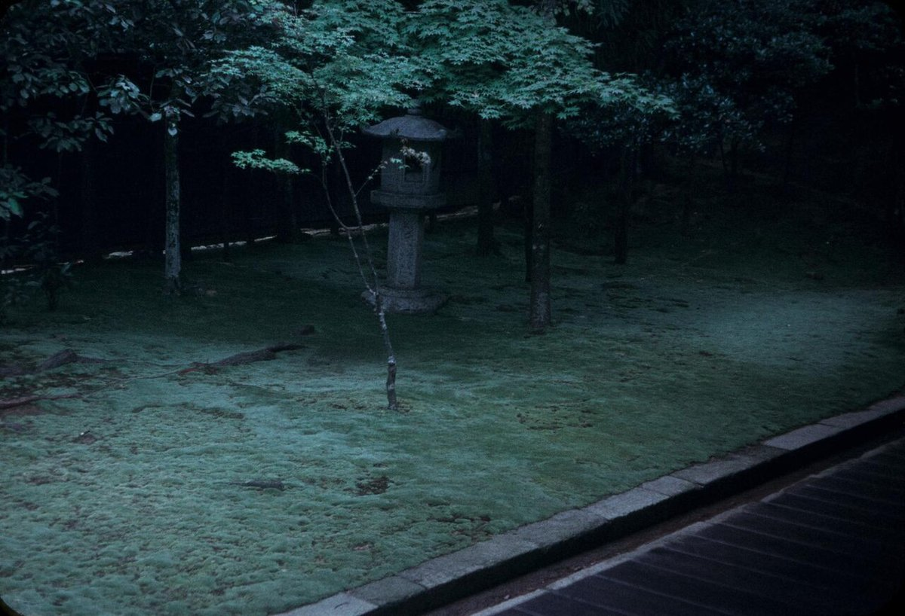
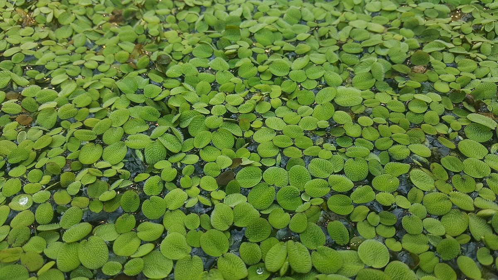
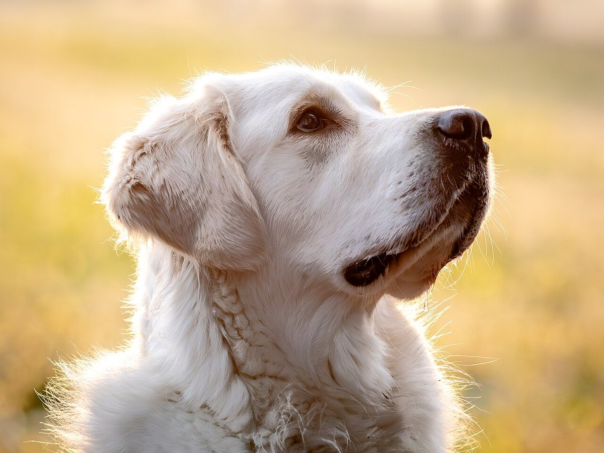

お店について
熊本県八代市古城町にある、トリミングサロンです。
| 項目 | 内容 |
|---|---|
| 屋号 | 犬の美容室 和 |
| 業種 | トリミングサロン |
| 所在地 | 熊本県八代市古城町1805-1 |
| 電話 | 090-7445-9522 |
| https://www.instagram.com/nagom_1 | |
| 営業時間 | 準備中(お問い合わせください) |
| 定休日 | 準備中(お問い合わせください) |
| サービス内容 | 準備中(お問い合わせください) |
| スタッフ | 準備中(お問い合わせください) |


このサイトの雰囲気について(制作側の案)
ゆったり、ていねいに、そばにいる時間。
店名「和」の字から連想して、制作側が考えたサイトの方向性です。ワンちゃんの時間を急がせない、静かな空気感を、色と余白で表しました。
これは制作側の案であり、店舗の理念や店名の由来を示すものではありません。内容は店舗にご確認ください。
スタッフ
準備中(お問い合わせください)
店舗の最新の様子は、Instagramでご覧いただけます。